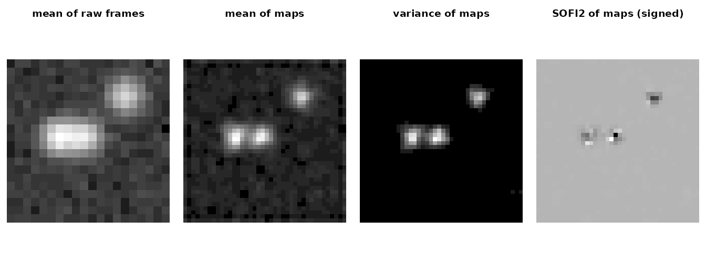

Temporal MSSR (t-MSSR) computes the single-frame MSSR map of every
frame of a sequence and then reduces the stack of maps pixel by pixel
with one temporal function (Torres-Garcia et al. 2022, Fig. 7a and
Supplementary Note 5.2). mssr_temporal() does this with the
definitions of Supplementary Table S2. Everything here is synthetic and
generated in this document.
A synthetic sequence
Three emitters blink independently: two close to each other and one apart. Each frame adds Poisson noise to the blurred emitters on a faint background.
set.seed(7)
size <- 20
g <- expand.grid(r = seq_len(size), c = seq_len(size))
spot <- function(r0, c0) exp(-((g$r - r0)^2 + (g$c - c0)^2) / (2 * (3 / 2.3548)^2))
emitters <- cbind(spot(10, 7), spot(10, 10), spot(5, 15))
frames <- array(0, c(size, size, 60))
for (t in seq_len(60)) {
on <- stats::runif(3) < 0.4
frames[, , t] <- stats::rpois(size^2, 25 * (emitters %*% on) + 2)
}
dim(frames)
#> [1] 20 20 60mssr_stack() stores the per-frame maps, so the
statistics below need MSSR only once per frame. Every per-frame setting
means what it means in mssr().
s <- mssr_stack(frames, fwhm = 3, amp = 2)
s
#> <mssr_stack> 60 frames of 40 x 40 MSSR maps (amp 2, order 1, fwhm 3 px)
#> frames 1 to 60 of the input; 0 degenerate; engine mssr_r_rev3
#> Use mssr_temporal() for a temporal statistic of the maps.
m <- mssr_temporal(s, "mean")
v <- mssr_temporal(s, "var")
k2 <- mssr_temporal(s, "sofi2")
v
#> <mssr_result> temporal_var
#> input 20 x 20 -> output 40 x 40 (amp 2, extent grid)
#> var of 60 frame(s) (frames 1 to 60)
#> per frame: fwhm 3 px, order 1, kernel disk (half-size 3), mesh TRUE
#> 0 degenerate frame(s), 0 frame(s) with warnings; path stack
#> trend (last / first tenth of frames) 1.03; mesh index 0.0725 (below_median, 194 pixels)
#> Temporal statistic of nonlinear structure maps, not a quantitative intensity.
op <- graphics::par(mfrow = c(1, 4), mar = c(0.5, 0.5, 2, 0.5))
show(apply(frames, c(1, 2), mean), "mean of raw frames")
show(as.matrix(m), "mean of maps")
show(as.matrix(v), "variance of maps")
show(as.matrix(k2), "SOFI2 of maps (signed)")
graphics::par(op)The panels show what each statistic does to these particular frames; they do not show that any statistic resolves the emitters better.
Definitions
Per pixel, x_1, ..., x_M are the maps’ values,
m their mean and d_t = x_t - m.
statistic |
Value | Minimum frames |
|---|---|---|
"mean" |
m |
1 |
"var" |
(1/M) sum(d_t^2), the population variance |
2 |
"tpm" |
(sum(x_t))^2 = M^2 * m^2 |
1 |
"cv" |
var / m, the supplement’s “CV” (0 where
m = 0) |
2 |
"sofi2" |
mean of d_t d_{t+1}
|
2 |
"sofi3" |
mean of d_t d_{t+1} d_{t+2}
|
3 |
"sofi4" |
fourth-order lagged cumulant | 4 |
TPM shows nothing the mean does not, for non-negative maps:
all.equal(mssr_temporal(s, "tpm")$values, 60^2 * m$values^2)
#> [1] TRUEThe SOFI statistics use signed deviations at consecutive lags, so
noise that is independent between frames does not enter their
expectation. Orders 3 and 4 change sign with the emitters’ duty cycle;
sign = "absolute" returns the absolute value for
display.
k4 <- mssr_temporal(s, "sofi4", sign = "absolute")
range(k4$values)
#> [1] 4.568025e-08 2.661497e+03"cv" is literally Var / Mean, an index of
dispersion rather than the standard deviation divided by the mean, and
it takes the sign of the mean.
Reading the outputs
The outputs are temporal statistics of nonlinear structure maps. They are not quantitative intensities, and no resolution gain is implied:
- Variance,
"cv"and SOFI of per-frame MSSR maps, and higher MSSR orders, can show two maxima where there is a single emitter. - When emitters are rarely on and dim, MSSR of nearly empty frames adds maxima to every statistic.
-
"var","cv"and SOFI also respond to bleaching and drift (seetrendbelow). Correct them first, and record what was done. - With
amp > 1, signal-free regions show a sub-pixel grid of periodamp. The article recommends Fourier interpolation for temporal analysis; the package amplifies with the supplement’s cubic kernel and mesh compensation instead.
diagnostics$mesh_index measures the grid as the range of
the mean over the amp x amp sub-pixel phases, relative to
the mean. Where structure is present the index would mix structure and
grid, so it uses only signal-free input pixels: by default those whose
raw temporal mean is strictly below its median, or a
background mask you supply. For the SOFI statistics it is
computed on the absolute values, since signed cumulants average to about
zero off the structure. It is formed only on the default
field-of-view-preserving grid, where each input pixel holds every phase
once. A frame subset of an mssr_stack uses the stack’s raw
mean over all its frames, recorded as
mesh_region = "below_median_stack".
c(m$diagnostics$mesh_region, format(m$diagnostics$mesh_index, digits = 3))
#> [1] "below_median" "0.0286"
corner <- matrix(FALSE, size, size)
corner[16:20, 1:5] <- TRUE # at least six pixels from every emitter
mssr_temporal(s, "mean", background = corner)$diagnostics$mesh_index
#> [1] 0.2578783diagnostics$trend compares the raw intensity in the last
tenth of the frames with that in the first tenth. A large trend, from
bleaching, drift or focus changes, inflates "var",
"cv" and SOFI, which treat it as fluctuation; the package
reports it and corrects nothing.
v$diagnostics$trend
#> [1] 1.033109Relation to the authors’ tools
The authors’ Python and MATLAB “SOFI” functions use absolute
deviations at zero lag, and the Fiji plugin uses absolute deviations
with lags that wrap around the ends of the acquisition. These are other
statistics, so their outputs do not match mssr_temporal()
by design. The authors’ R, MATLAB and Fiji variance divides by
M - 1. vignette("method-concordance") lists
the sources and every difference.
Memory and time
Statistics other than the mean and TPM need the mean before the
deviations, so they pass over the frames twice. The per-frame maps are
kept for the second pass when they fit the memory budget, and recomputed
otherwise; both paths give the same values.
mssr_estimate_resources() reports both estimates.
est <- mssr_estimate_resources(c(512, 512), fwhm = 3, amp = 2, frames = 300,
statistic = "var")
est[c("stack_bytes", "stored_peak_bytes", "recompute_peak_bytes")]
#> $stack_bytes
#> [1] 2516582400
#>
#> $stored_peak_bytes
#> [1] 5435877120
#>
#> $recompute_peak_bytes
#> [1] 402712320